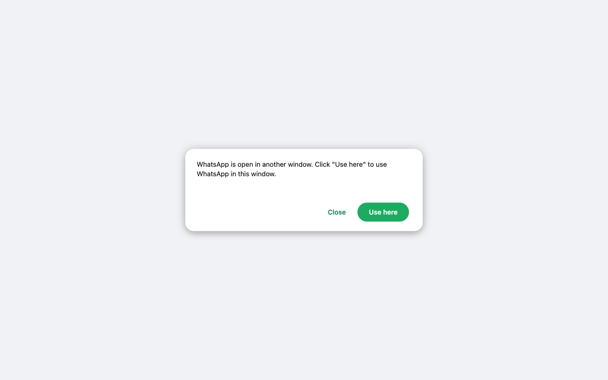

WA Bulk Sender vs WAWebSender (2026 Comparison)
WAWebSender is one of the best-known WhatsApp bulk messaging tools, but it is also one of the most restrictive and expensive products in the category. If you are comparing it with WhatsApp Bulk Sender & Privacy Guard, the practical differences come down to price, free-plan generosity, permissions, and how much friction the product adds before it becomes useful.
Quick comparison
| Area | WA Bulk Sender | WAWebSender |
|---|---|---|
| Free sending | 50/day | 10/day |
| Excel import | Free | Not the main free path |
| Privacy blur | Free | No comparable free privacy mode |
| Pro price | $1.9/month | $19.99/month |
| Permissions | WhatsApp only | WhatsApp-focused |
| UI style | Popup + focused workflow | Large injected side panel |
Interface approach
WAWebSender injects a large side panel into WhatsApp Web. That can feel convenient, but it also takes over more of the screen and has generated complaints about space usage. WhatsApp Bulk Sender & Privacy Guard currently keeps the main workflow in a popup, which is simpler and easier to dismiss when you only need to launch a send run.


Pricing difference is not subtle
This is the clearest difference. WAWebSender's individual Pro plan is listed at $19.99/month. WhatsApp Bulk Sender & Privacy Guard is positioned at $1.9/month. That is not a small optimization. It is a category-level pricing reset for buyers who only need practical batch sending rather than a large suite of group-management features.
Free plan philosophy
WAWebSender's free tier behaves more like a limited demo. The current product direction for WhatsApp Bulk Sender is different: give users a real workflow for free, especially spreadsheet import and privacy blur, and let paid upgrades happen when they actually need scale, attachments, or detailed export.
- Free Excel import creates immediate value
- Free privacy blur makes the product safer to demo
- 50/day is enough to judge whether the tool is useful
Which one should you choose?
Choose WAWebSender if you want a broader group-oriented feature set and are comfortable paying premium pricing. Choose WhatsApp Bulk Sender & Privacy Guard if you care more about a low-friction WhatsApp Web workflow, free spreadsheet import, privacy blur, and a much cheaper upgrade path.